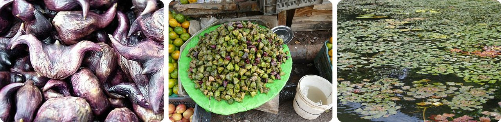
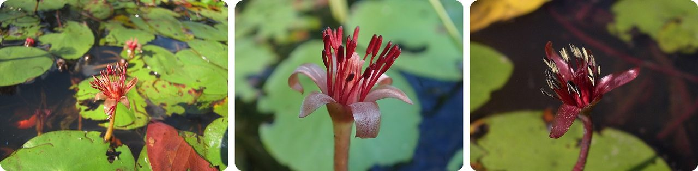
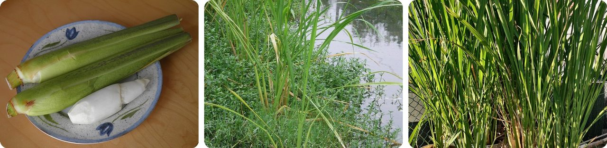
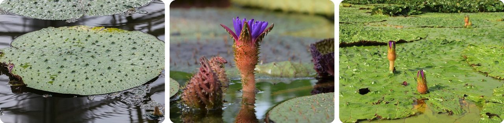
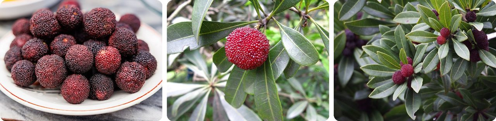
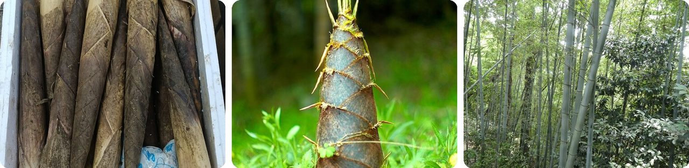
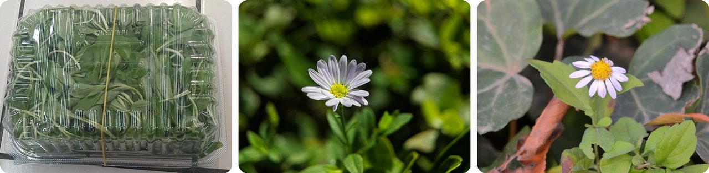
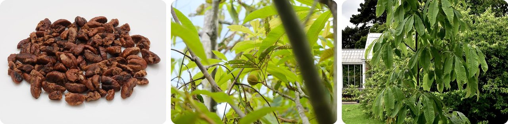
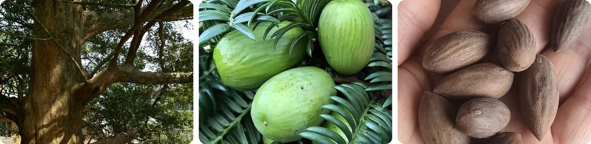
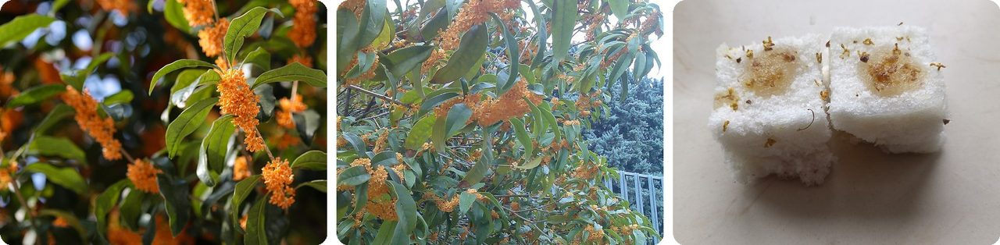

🌍 十大杭州家乡美食
2026年10月24日
1. 🇨🇳 菱角是长在湖里、头上长角的坚果

在浙江的湖泊和池塘里，长着一种浮在水面上的植物，菱形的叶子围成一圈。它在水下结出一种长着两到四个尖角的坚果，这就是菱角（líng jiǎo）。嫩的菱角是绿色的，又嫩又脆。这就是嫩菱（nèn líng），秋天剥开就能吃的那种。菱角长老了会变成深红色，所以老一点的也叫红菱。浙江嘉兴有一种很有名的南湖菱，就算熟透了也还是绿色的。
中国人种菱角已经有至少 3000 年了。在古代日本，人们把晒干的菱角撒在地上当作带刺的陷阱，尖得能扎穿当时的鞋子。小朋友们还有一首关于菱角的绕口令：吃菱角，剥菱壳，菱壳丢在北壁角！
它就像一颗戴着一对小恶魔角的坚果。
2. 🇨🇳 莼菜自带一层天然的"果冻外衣"

莼菜（chún cài）是一种池塘植物，椭圆形的小叶子浮在水面上。泡在水里的部分，从卷着的小嫩叶到茎，全都裹着一层厚厚的、透明滑溜的胶质。在杭州，人们把这些裹着胶质的小嫩芽采下来，做成一道名菜：西湖莼菜汤。莼菜本身几乎没有味道，大家爱它的是那种口感：滑滑嫩嫩，像一颗颗小果冻一样溜进嘴里。
它的花还有个好玩的本领。第一天，花先冒出水面当"女孩花"，然后沉下去；第二天再冒出来，就变成了"男孩花"。还有一个惊喜：莼菜在北美也有野生的，连海狸筑坝的池塘里都能找到。
可以把它想成一种自带果冻外套的蔬菜。
3. 🇨🇳 茭白是被一种"好"真菌撑大的茎

茭白（jiāo bái）来自一种叫菰的野生稻草。菰本来是细细瘦瘦的。可是有一种特别的真菌钻进了它的茎里 → 茎里的细胞变大、变多 → 鼓成一根水嫩雪白的茭白，差不多有一支铅笔那么长。它吃起来有点像新鲜的竹笋，炒熟了还是脆脆的。最好吃的时候是 9 月到 11 月。如果真菌长"歪"了，茎里就会装满黑色的孢子，古时候人们还拿这些孢子来画眉毛。
你的美国朋友多半没吃过茭白，原因是：美国禁止进口茭白，因为那种真菌可能会伤害美国本土的野生稻。还有，常见的姓"蒋"（Jiǎng），就是从这种植物来的。
换句话说，这是一种因为植物"生了病"才有的蔬菜。
4. 🇨🇳 芡实长在一个满是刺的"鸡头"里

芡实（qiàn shí）来自一种巨大的带刺睡莲，叫芡。它圆圆的叶子常常超过一米宽，最大能到 2.7 米，比一个大人的身高还宽，茎和叶子上都长满了尖刺。它的果实是一个 5 到 10 厘米大的刺球，里面塞满了圆圆的种子。果实顶上翘着一个尖尖的嘴，难怪人们给它的种子起了个外号叫鸡头米（jī tóu mǐ）。
几千年前，长江一带的人们，包括浙江的河姆渡古村落，就已经在采集芡实了。在印度，它叫 makhana，常被炒成像爆米花一样的零食；全世界 90% 以上的芡实都产自印度。
说白了，这是一朵用尖刺看守零食的睡莲。
5. 🇨🇳 杨梅是浙江夏天那颗疙疙瘩瘩的红果子

杨梅（yáng méi）是一种圆圆的、表面疙疙瘩瘩的红色水果，大约 2 厘米大，像一颗大葡萄。中间有一颗大核，果肉多汁，又甜又酸。它的季节很短。杨梅大约在 5 月下旬成熟，端午节一过就差不多没了。颜色最深、紫红紫红的最熟。
浙江人爱吃杨梅的历史非常久：在余姚距今 5000 到 7000 年的河姆渡古村落里，就发现过杨梅的花粉。如今余姚自称"中国杨梅之乡"，最有名的品种叫荸荠种，名字来自荸荠。
它是一颗长得像红绒球、吃起来像酸糖的夏日小零食。
6. 🇨🇳 竹笋一天能长一米多高

毛竹（máo zhú）是一种来自中国的大型竹子，它的小宝宝"笋"（sǔn）是大家最爱的食物之一。毛竹24 小时能长 119 厘米，差不多是一个六岁小孩的身高，最后能长到 28 米，有 9 层楼那么高。冬笋是在还没冒出地面时就挖出来的，据说最好吃。春笋个头更大。江浙一带的人家会把冬笋和冬腌菜一起炒，这道菜叫"炒二冬"。
在日本，毛竹叫"孟宗竹"，名字来自中国古代的孟宗。故事里，他生病的妈妈冬天想吃竹笋，他就在竹林里哭，竹笋竟然为他冒了出来。
换句话说，如果你坐在旁边一直看，几乎能看见晚饭在长高。
7. 🇨🇳 马兰头是从田埂边采来的野生春菊

马兰头（mǎ lán tóu）是一种小小的野草，学名叫马兰，长在路边、山坡上，还有稻田之间的田埂上。到了晚些时候，它会开出淡紫色或白色的小菊花。人们在早春、大约清明前后（4 月初），趁它还没开花时采嫩叶。在长江以南，最经典的吃法是香干拌马兰头：把马兰头和切成小丁的香干拌在一起，做成凉菜。大家把它当成美味，就是因为它那股特别的清香。
据说红梗的马兰头最好。它还被带到了美国的加州和夏威夷。
它是一朵从路边小菊花长成春日凉菜的野草。
8. 🇨🇳 山核桃是美国碧根果的表亲

山核桃（shān hé tao）是一种长在浙江和附近省份山坡上的树，大约 20 米高。它和美国的碧根果、山核桃同属一个植物家族：山核桃属（Carya）。人们把它的果子炒熟或者做成糖果，还用它榨油做菜。剥好壳、炒熟的果仁叫山核桃仁，是杭州有名的特产。
大约 16000 公顷的山核桃树能产出约 5000 吨果子，那片树林差不多有 22000 个足球场那么大。
可以把它想成碧根果住在山里的小个子表亲。
9. 🇨🇳 香榧要在"活化石"树上长三年才成熟

香榧（xiāng fěi）是一种常绿树，它的家族能追溯到大约 1.7 亿年前，那时候还是恐龙的时代。在浙江，诸暨、东阳和富阳这些地方都有香榧。它特别有耐心：第一年开花，第二年结果，第三年果子才成熟。一棵树能连续结果一千多年。
香榧果子是橄榄形的，外壳很硬，常常被炒来吃。在宋朝，椒盐香榧是进贡给皇帝的特别礼物。它的木头质地非常好，被用来做高级围棋棋盘。
说白了，这是一种长成所需的时间比小朋友上幼儿园还久的零食。
10. 🇨🇳 桂花是杭州香喷喷的市花

桂花（guì huā）是杭州的市花。夏末到秋天，差不多就是现在，桂花树上会开满一簇簇只有 1 厘米长的小花，空气里都是甜甜的香味。它的香味常被形容像熟透的桃子或杏子。橙色的丹桂最常被用来做甜点。
人们把桂花加进茶、果酱、糕点、汤圆和甜汤里。最受欢迎的一种是酒酿桂花汤圆。
它是一棵能让整座城市闻起来像面包店的树。
趣闻
大约 1700 年前，有一位叫张翰的官员，在离家乡吴地（长江以南）很远的地方做官。一年秋天，凉凉的秋风让他想起了家乡的三样美食：菰菜（茭白就长在这种植物上）、莼菜汤和新鲜的鲈鱼。他说，人生最重要的是活得开心，何必为了名利跑到几千里外，于是马上回家了。直到今天，中国人还用"莼鲈之思"来形容想家。下一期：中国成语和它们背后的有趣故事。
图片来源（Wikimedia Commons）
- #1: Water-caltrops.jpg by unknown, CC BY-SA 3.0
- #1: Burrabazar Market in Kolkata 09.jpg by Kritzolina, CC BY-SA 4.0
- #1: Trapa natans Kotewka orzech wodny Oława 2023-08-11 05.jpg by Agnieszka Kwiecień, Nova, CC BY-SA 4.0
- #2: Brasenia schreberi inat1.jpg by Sara Hollerich Giles, CC0
- #2: Brasenia schreberi 28983668.jpg by Laura Costello, CC BY 4.0
- #2: BraseniaAlt.jpg by No machine-readable author provided. Dacrycarpus~commonswiki assumed (based on copyright claims)., CC BY-SA 3.0
- #3: Wild rice stems.jpg by Micromesistius, CC0
- #3: Water bamboo.JPG by unknown, CC BY-SA 3.0
- #3: Zizania latifolia in cultivation.jpg by Leizhaoyn, CC BY-SA 4.0
- #4: Euryale ferox, Jardín Botánico, Múnich, Alemania, 2013-09-08, DD 02.JPG by Diego Delso, CC BY-SA 3.0
- #4: Euryale ferox kz05.jpg by Krzysztof Ziarnek, Kenraiz, CC BY-SA 4.0
- #4: Euryale ferox · Hualien, TW-TA, TW by (c) chiuluan, some rights reserved (CC BY), CC BY
- #5: Myrica rubra in China.jpg by Dinkun Chen, CC BY-SA 4.0
- #5: Yumberry Berries zoom in 2008.jpg by Carsten Ullrich, CC BY-SA 2.0
- #5: Chinese Bayberry (Myrica rubra) (19011153788).jpg by harum.koh from Kobe city, Japan, CC BY-SA 2.0
- #6: Bamboo shoots.jpg by Fumikas Sagisavas, CC0
- #6: Big Bamboo Shoot (Joi Ito).jpg by Joi Ito, CC BY 2.0
- #6: Phyllostachys edulis · Danxiashan Suodao, Renhua, Shaoguan, Guangdong, China by (c) Aaron Liston, some rights reserved (CC BY), CC BY
- #7: Aster indicus (RT-mart).jpg by Fumikas Sagisavas, CC0
- #7: Aster indicus-IMG 20180904 111233.jpg by Sun Jiao (Interaccoonale), CC BY 4.0
- #7: Aster indicus · 中国河南省郑州市金水区 by (c) Zinogre, some rights reserved (CC BY-SA), CC BY-SA
- #8: Carya cathayensis nuts.jpg by King of Hearts, CC BY-SA 4.0
- #8: Carya cathayensis · 中国浙江省杭州市临安区临安区太湖源镇高云村 by (c) 王天明, some rights reserved (CC BY), CC BY
- #8: Juglandaceae Carya cathayensis 1.jpg by NasserHalaweh, CC BY-SA 4.0
- #9: Torreya grandis.jpg by Farm, CC BY 3.0
- #9: Unripe torreya grandis fruit.jpg by Fumikas Sagisavas, CC0
- #9: Roasted Torreya grandis fruit placed in the palm of your hand.jpg by Fumikas Sagisavas, CC0
- #10: Osmanthus fragrans (orange flowers).jpg by Laitr Keiows, CC BY-SA 3.0
- #10: Osmanthus fragrans flowers.jpg by Achillu, CC BY-SA 3.0
- #10: Osmanthus cake.jpg by Fumikas Sagisavas, CC0


_(19011153788).jpg){kind=link}

.jpg){kind=link}
.jpg){kind=link}


.jpg){kind=link}